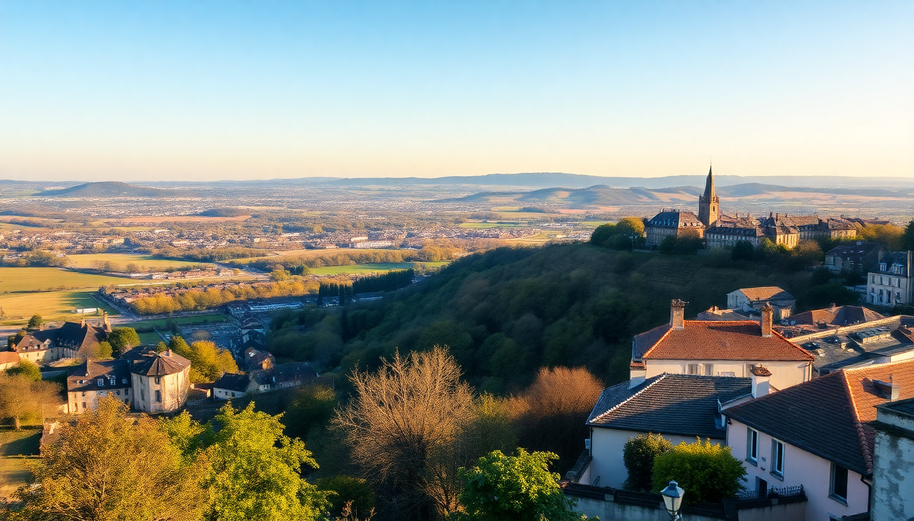

7-Day France Itinerary: Paris, Loire Valley & Bordeaux

I planned this 7-day France loop to hit three very different regions without feeling like I spent the whole trip on a train. Paris for the big sights, Loire Valley for the châteaux and countryside, then Bordeaux for the wine. It’s tight but doable if you move early and pack light. Here’s exactly how it went.
How do you get from Paris to the Loire Valley?
Take the TGV from Paris Montparnasse to Tours. It’s about an hour, no need to book first class. I bought tickets on SNCF Connect two weeks ahead and paid €25 each way. Tours is the best base for the Loire because it’s central and has decent food options after the châteaux close.
We stayed at Hôtel de l’Univers on Boulevard Heurteloup — two-minute walk from the station, clean rooms, €90 a night. Skip the breakfast there and walk to La Chocolatière on Rue Nationale for croissants and coffee.
From Tours, rent a car for one day. We used Hertz at the Tours train station. You don’t need a car in Paris, but you absolutely need one for the Loire châteaux loop.
Which châteaux in the Loire Valley are worth your time?
Not all of them. I visited five across two days. Here’s the shortlist:
- Château de Chenonceau — The one that spans the river. Arrive at 9 AM to beat the bus crowds. Allow 2 hours.
- Château de Chambord — Massive, over-the-top, and the double-helix staircase is legit. But it’s a 30-minute drive from Chenonceau, so pick one morning for both.
- Château de Villandry — The gardens are the real draw here, not the interior. Skip the house, walk the vegetable plots and the rose garden.
- Château d’Azay-le-Rideau — Smaller, more intimate, and less crowded. Good for a relaxed afternoon stop.
- Château de Cheverny — Skip if you’re short on time. It’s Tintin-themed and the interiors are underwhelming.
We drove the Loire à Vélo bike path between Chenonceau and Amboise after lunch. Flat, easy, and you see vineyards up close.
What’s the best way to get from Loire Valley to Bordeaux?
TGV from Tours to Bordeaux Saint-Jean. Direct train, about 2 hours 15 minutes. Book ahead — same price dynamic as the Paris leg. We paid €29 each.
Once in Bordeaux, ditch the car. The city center is walkable and the tram system (Tram C, Tram A) covers everything. We stayed at Hôtel de Sèze near Place Tourny — quiet street, central, €120 a night. The staff pointed us to Le Petit Commerce on Rue du Pas-Saint-Georges for oysters and white wine. €18 for a dozen and a pichet.
What should you do in Bordeaux besides drink wine?
Bordeaux surprised me. It’s not just a wine town. Here’s what I actually did:
- Place de la Bourse and the Miroir d’Eau — Go at sunset when the reflection pool is lit. It’s free and crowded but worth five minutes.
- Cité du Vin — The wine museum. Skip the tasting at the top (overpriced) but the permanent exhibition is excellent. Allow 2.5 hours.
- Saint-Pierre district — Narrow streets, wine bars, and L’Entrecôte on Cours du Médoc for steak-frites with their secret sauce. Cash only, no reservations.
- Bordeaux Cathedral — Free entry, quick walk-through, then grab a canelé at La Toque Cuivrée on Rue Sainte-Catherine.
For a wine-tasting without a tour, walk into Maison du Vin de Bordeaux on Cours du XXX Juillet. €10 for a flight of three wines, no appointment needed.
Is Saint-Émilion worth a day trip from Bordeaux?
Yes, but only if you go on a weekday. Weekends are packed with bachelor parties and bus tours. Take the TER train from Bordeaux Saint-Jean to Saint-Émilion — 35 minutes, €8 each way.
Walk up to the Monolithic Church (underground, carved from rock, €10 entry) and then hit Château La Gaffelière for a tasting. They take walk-ins before 11 AM. I bought a bottle of their 2015 red for €22 — cheaper than anywhere in Bordeaux.
Skip the tourist train that circles the village. Just walk the Sentier des Vignes trail behind the church. It’s a 20-minute loop through the vineyards with views of the entire valley.
Where should you eat in Paris without wasting time or money?
Paris on this itinerary is just the start and end. Two days max. Here’s what worked:
- Bouillon Pigalle — No reservations, long line at 7 PM, but the line moves fast. Get the escargots and the duck confit. €20 per person with wine.
- Breizh Café in Le Marais — Best crêpes in Paris. The salted caramel one with buckwheat flour. €12.
- Marché des Enfants Rouges — Covered food market in the 3rd. Grab a Moroccan couscous plate and eat at the communal tables.
- L’As du Fallafel on Rue des Rosiers — The line looks insane but it’s 10 minutes. The falafel pita is €7 and worth the hype.
For hotels, I booked Hôtel des Arts near Montmartre. Basic, clean, €85 a night, and a 5-minute walk to the Sacré-Cœur. Skip the Moulin Rouge area — it’s a tourist trap with overpriced drinks.
FAQ
Can you do this itinerary without a car? Yes, except for the Loire Valley day. You can book a minibus tour from Tours to Chenonceau and Chambord for about €80 per person. I prefer the rental car because you control the timing and can stop at Villandry or Azay-le-Rideau on a whim. The rest of the trip is train and tram.
How much should I budget for this trip? I spent about €1,200 per person for 7 days, excluding flights. That covered trains, rental car for one day, hotels (€85–€120 per night), meals (€20–€30 per person), and château entry fees (€10–€15 each). Wine tastings added another €50 total. You can cut costs by staying in hostels or eating more street food.
What’s the biggest mistake people make on this route? Overpacking the Paris leg. I see people trying to do the Louvre, Orsay, Versailles, and the Eiffel Tower in two days. It’s exhausting and expensive. Pick two things max. I chose the Musée d’Orsay (impressionists, shorter lines) and a walk along the Seine at sunset. That’s enough.
Conclusion
- Start in Paris, but keep it to two days — focus on Orsay and walking, not ticking every museum.
- Use Tours as your Loire base and rent a car for one day to hit Chenonceau, Chambord, and Villandry.
- Take the TGV from Tours to Bordeaux — it’s faster and cheaper than driving.
- Spend two days in Bordeaux proper and one day on a weekday trip to Saint-Émilion.
- Book trains two weeks ahead for the best prices. Walk everywhere in the city centers.